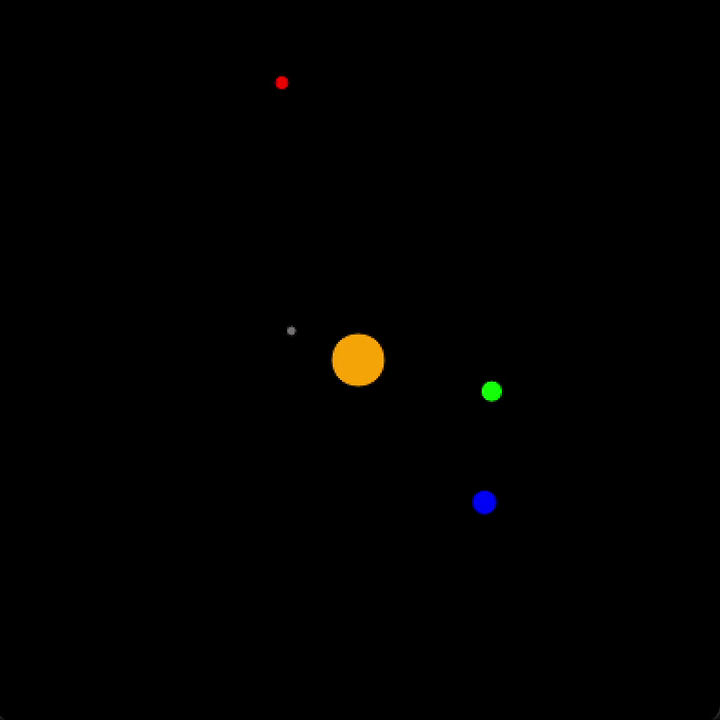

Education: BA in Applied Mathematics, Dartmouth College 2022
Relevant Coursework: Scientific Computing, Introduction to Programming and Computation, Multivariable Calculus with Linear Algebra, Calculus of Vectored Valued Functions, Linear Algebra, Differential Equations, Math Beyond Calculus, Abstract Algebra, Probability, Number Theory, Intro to Set Theory, Evolutionary Game Theory, Topics in Applied Mathematics
Interests: Software Engineering, Hiking, Camping, Football, Cooking, Traveling, Poker/Playing Cards
Dartmouth Football (Bio) : Athletics have always been a strong passion of mine. I've played sports for my entire life including football, wrestling, and soccer. In high school, I recieved All-American honors in heavyweight wrestling in the National Preps tournament as well as All-District and All-State honors for football both my junior and senior year. After highschool, I was fortunate enough to play football at Dartmouth College. At Dartmouth, I found success both individually and as a member of the team, having won two Ivy-League championships during my time there. Moreover, I was incredibly honored to have received various individual accolades which can be found on my resume above.
Application for reviewing albums. Users can review/view albums and view other users reviews. Used Flask and SQLAlchemy to create a database and a RESTful API backend. Leveraged React Router to set up navigation between different components on the application. Authenticated users and added password protection/hashing using Bcrypt. Employed React.js and Vanilla CSS to style the front end of the site.
Website for browsing F1 drivers and races which allows users to read and post both as well as views stats. Used Flask and SQLAlchemy to create a database and a RESTful API backend. Employed React.js for the frontend and used Vanilla CSS to style. Used React Router to set up navigation between different components on the application.
Flats After Flatiron (Github):
Command line interface program that allows users to browse, schedule, and edit vacations at various properties. Utilized SQLAlchemy to create a database with three different models (Traveler, Domicile, Vacation(join)). Included two many-to-many relationships as well as one reciprocal relationship. Validated user input for login and new date entry.
Website for a Brewing company entitled Brew Dog. Allows users to browse/search for/add beer. Employed React.js and Bootstrap to style the front end of the site. Fetched data from an existing API to create beers to display. Leveraged React Router to set up navigation between different components of the application.
During my Udemy class in Python, I created a program to play Blackjack using OOP. I then built Blackjack in React in order to aid my learning in Javascript. All of the standard rules of blackjack apply (dealer must hit until above 17, aces can be both 1 or 11, both dealer and player bust above 21, etc.). The game gives the player 100 chips to start out and allows them to bet these chips at the start of each hand. The player has the option to either continue with an existing game (if they still have chips remaining) or start a new game at any point.
Interactive Dartmouth Map (Python) (Github):
As my final project in one of my programming classes at Dartmouth, I created an interactive map of Dartmouth that includes vertices at each of the main walking areas on campus. The map allows you to click on any vertex on the map and then hover over any of the other vertices to determine the shortest walking path between them. The search algorithm is a breadth-first search algorithm that utilizes backchaining.
Calendar (Python) (GitHub):
This is an interactive calendar with a year of your choosing that I created in Python using OOP. This project allows you to schedule events (with options to schedule them with a time or as daily or weekly recurring events), search for events in the calendar with specifications such as time or recurring, and finally browse the calendar with all of the events you have scheduled.
Solar System (Python) (Github):
During my time at Dartmouth, I built and interactive solar system using Python and OOP. It includes the Sun, Mercury, Venus, Earth, and Mars with realistic gravitational pull and orbiting for each body in the system. I would have liked to inlcude the rest of the solar system (which would have been easy to implement), but given the extreme distances between the rest of the planets, it would be difficult to simulate them all in the same window.
Over the winter of my Sophomore year at Dartmouth, I worked at the growth equity branch of the investment firm, Iconiq Capital, which specializes in tech investment. During my time there I conducted my own market research and created an analyst presentation on the Chaos Engineering space which I presented to a groups of the firm's partners. Moreover, I helped to organize thousands of units of company data using the CRM salesforce and helped to streamline operations for a founding partner.
Working with Delta Investment Management was my first experience with working in finance. Here, I learned the ins and outs of finance from the buyer-side. Additonally, I helped to streamline some functionalities for the compny using excel.
In the fall of 2020, I joined the Dartmouth Investment and Philanthropy club at dartmouth, a student led orginization which manages a $500,000 equity portfolio and reinvests gains into philanthropic endeavors. During my time in the club, I worked in small groups to analyze potential investments for the portfolio.
In high school, my friend and I founded a math tutoring service that instructed children ages kindergarten to fifth grade at both the Boys and Girls Club and YMCA. In total, we actively tutored over 50 children from each orginization over Skype and managed over 15 tutors at our high school. Additionally, we spread the program to other high schools which connected with the Boys and Girls Club/YMCA's in their areas.
Throughout high school and the beginning of college, I worked intermittenly with a few different Boys and Girls Clubs in my area. In high school, I primarliy volunteered by helping students with homework (particualry in math) as well as supervising them during recess periods. During the summer after my freshmen year of college I worked with a Boys and Girls Club in Johnston County, NC where I helped them to design, build, and code lego robotics.
My first job was working at a pizzeria called Salvio's Pizzeria in my hometown of Raleigh, North Carolina. Here I worked the register, delivered orders, and helped prepare food in the kitchen.